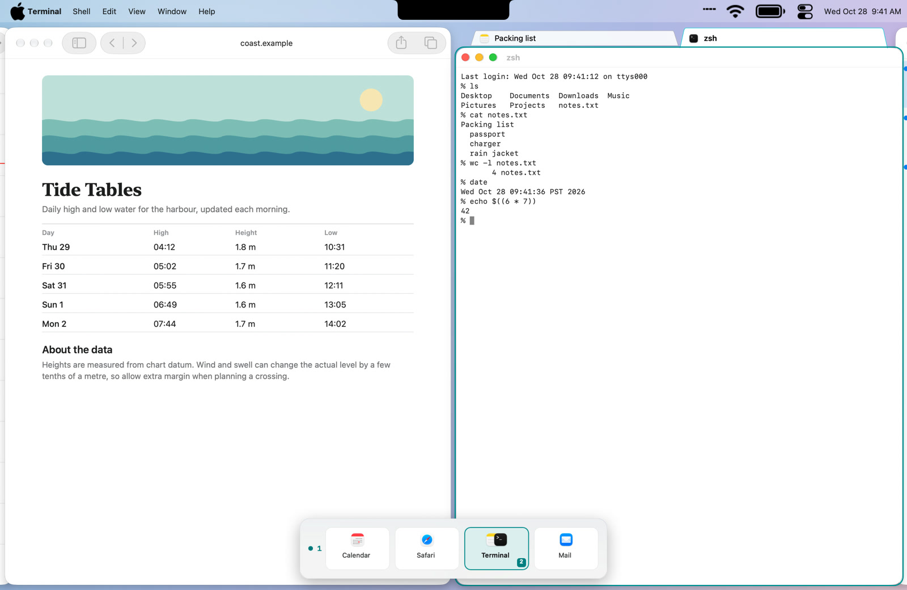

Microfish
Microfish is a scrolling, tiling window manager for macOS, in the style of niri and PaperWM. Windows sit in columns on a strip that scrolls sideways. A column can hold a stack or a set of tabs, and optional rows put several strips on one display. A three-finger swipe scrolls the strip, and a minimap shows where you are.
Microfish is in beta; there is no stable release yet. It is built for macOS 15 and has only been tested on macOS 27. All releases
What it does
Install
- Unzip the download and move Microfish into the Applications folder. Microfish only runs from there (or from
~/Applications). - Open Microfish. macOS says it was downloaded from the internet and asks whether to open it. The app is signed with a Developer ID and notarized by Apple, so choose Open. A menu-bar icon appears.
- If Microfish says it needs your approval, open System Settings › General › Login Items & Extensions and allow the Microfish background item (it may be listed as Microfish or Microfish Engine), then open Microfish again.
- When the alert “Allow Microfish to Control Windows” appears, choose Continue. Then turn on both Microfish Engine and Microfish in System Settings › Privacy & Security › Device Control and Data Access. On macOS before 27 that pane is called Accessibility. Windows start tiling once the engine has access.
- If three fingers already switch full-screen apps, set System Settings › Trackpad › More Gestures › Swipe between full-screen applications to four fingers, or change Microfish to four fingers in Settings › Behavior › Swipe with.
Screen Recording is optional. It is only used by Match selected tab to app color in Settings › Appearance. Microfish has no network access apart from update checks, and it collects nothing.
Hyper is Control-Option-Command (⌃⌥⌘). Caps Lock can be mapped to Hyper with Karabiner-Elements (optional). Every shortcut can be changed in Settings › Shortcuts. The full list of default keys is in the README.
Homebrew
brew trust elenaonline/tap
brew install --cask elenaonline/tap/microfishThe cask installs the newest published build, which today is the beta. Homebrew 7 refuses casks from a tap you haven’t trusted, which is what the first line is for. Older Homebrew has no brew trust; skip that line there.
Updates
Microfish uses Sparkle to check this project’s releases. Every update is code-signed and notarized by Apple, and signed with an EdDSA key that the app checks before installing. Before an update replaces the app, Microfish stops the engine cleanly (it saves your session), then relaunches.
In Settings › Updates, Automatically check for updates is on by default and Automatically download and install updates is off. Check for Updates… is in the menu-bar menu.
Get beta updates is off by default. Every release so far is a beta, so a copy of 0.1.0-beta.1 is offered nothing newer until you turn that switch on. Turning betas off never downgrades you: you stay on the beta until a newer stable version arrives.
Uninstall
- Choose Quit Microfish from the menu-bar icon.
- Drag Microfish out of Applications into the Trash. With Homebrew, run
brew uninstall --cask microfishinstead. - Optional: remove Microfish and Microfish Engine from Device Control and Data Access (Accessibility before macOS 27), and check Login Items & Extensions for a leftover Microfish item.
- Optional: delete what Microfish wrote:
rm -r ~/Library/"Application Support"/Microfish ~/Library/Logs/Microfish rm -r ~/Library/Caches/net.webreceptor.microfish ~/Library/HTTPStorages/net.webreceptor.microfish defaults delete net.webreceptor.microfish
Requirements and known limits
- An Apple silicon Mac on macOS 15 or later. Intel is not supported yet.
- Nothing before macOS 27 has been tested, although Microfish is built for 15.
- Displays have separate Spaces must be on in System Settings › Desktop & Dock. It is on by default; the engine refuses to start without it.
- This is a beta, and rows are off by default.
- Updating from inside the app has been tested with throwaway keys, but no installed copy has taken an update from the real feed yet.
The README has the rest.